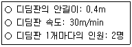
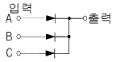
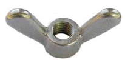
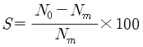
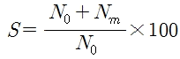
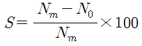
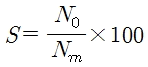

승강기기능사 (2008-02-03 기출문제)
1과목: 승강기개론
1. 승강장 출입구 바닥 앞부분과 카 바닥 앞부분과의 틈의 너비는 몇 [㎝] 이하로 규정하고 있는가?
- 1㎝
- 4㎝
- 5㎝
- 7㎝
(정답률: 69%)

2. 다음 중 전압과 주파수를 동시에 변화시켜 직류전동기와 동등한 제어성능을 얻을 수 있는 속도제어 방식은?
- 교류일단제어
- 워드레오나드 제어
- 교류궤한 제어
- VVVF 제어
(정답률: 69%)
3. 링크로 연결된 한 쌍의 웨이트(weight)를 외전시켜 그 원심력을 이용하여 스위치의 개폐작용을 하는 것은?
- 완충기
- 조속기
- 균형추
- 도어인터록
(정답률: 57%)
4. 정격속도가 60m/min인 승강기에서 조속기 2차캣치가 작동되어 비상정지장치를 작동시키는 속도는 몇 [m/min]를 넘기 전이어야 하는가?
- 63m/min
- 68m/min
- 78m/min
- 84m/min
(정답률: 35%)
5. 다음 중 균형추의 총 중량에 관한 설명으로 옳은 것은?
- 일반적으로 빈 카의 자체하중에 정격하중의 35~50%의 중량을 제한값
- 일반적으로 빈 카의 자체하중에 정격하중을 제한 값
- 일반적으로 빈 카의 자체하중에 정격하중을 더한 값
- 일반적으로 빈 카의 자체하중에 정격하중의 35~50%의 중량을 더한 값
(정답률: 51%)
6. 승강장의 문이 열린 상태에서 모든 제약이 해제되면 자동적으로 닫히게 하여 문의 개방에서 생기는 2차 재해를 방지하는 것은?
- 도어 인터록
- 도어 클로저
- 도어 머신
- 도어 행거
(정답률: 81%)
7. 유입 완충기의 행정(stroke)은? (단, G는 중력가속도 9.8m/S 이다.)
- 카가 정격속도의 115%로 충돌할 경우 평균감속도가 1G이하로 정지시킬 수 있는 길이로 한다.
- 카가 정격속도의 125%로 충돌할 경우 평균감속도가 1G이하로 정지시킬 수 있는 길이로 한다.
- 카가 최대속도의 115%로 충돌할 경우 평균감속도가 1G이하로 정지시킬 수 있는 길이로 한다.
- 카가 최대속도의 125%로 충돌할 경우 평균감속도가 1G이하로 정지시킬 수 있는 길이로 한다.
(정답률: 41%)
8. 도어가 닫히는 도중에 승객이 출입하는 경우, 충돌사고 방지를 위하여 도어 선단에 검출장치를 부착하여 도어를 반전시킨다. 그 종류에 해당되지 않는 것은?
- 세이프티 슈
- 광전장치
- 초음파장치
- 인터록장치
(정답률: 61%)
9. 수평보행기의 디딤면이 고무제품 등 미끄러지기 어려운 구조가 아닌 경우 수평보행기의 경사각도는 몇 [°]이하로 하여야 하는가?
- 8° 이하
- 10° 이하
- 12° 이하
- 15° 이하
(정답률: 60%)
10. 카가 어떤 원인으로 최하층을 통과하여 피트로 떨어질 때 충격을 줄여주기 위하여 설치하는 것은?
- 카틀
- 완충기
- 조속기
- 균형로프
(정답률: 83%)
11. 승강기를 속도별로 분류할 때 흔히 저속, 중속, 고속, 초고속으로 분류하는데 고속은 속도가 몇 [m/min] 인 것을 말하는가?
- 60~1⑤m/min
- 120~300m/min
- 360~500m/min
- 560m/min 이상
(정답률: 63%)
12. 과부하방지장치의 작동치는 정격 적재하중의 몇 [%]를 표준으로 하는가?
- 95~100%
- 1⑤~110%
- 115~120%
- 125~130%
(정답률: 72%)
13. 주어진 조건에서 에스컬레이터의 수송능력은 시간당 몇 명이 되겠는가?

- 8000명
- 9000명
- 120000명
- 150000명
(정답률: 70%)
14. 다음 중 유압엘리베이터에 주로 사용되는 펌프는?
- 기어펌프
- 벤펌프
- 스크류펌프
- 밀턴펌프
(정답률: 84%)
15. 가장 먼저 등록된 부름에만 응답하고, 그 운전이 완료될때까지는 다른 부름에 응답하지 않는 방식으로, 화물용이나 카리프트 등에 주로 사용되는 조작방식은?
- 카 스위치 방식
- 신호방식
- 단식 자동식
- 승합 전자동식
(정답률: 74%)
2과목: 안전관리
16. 핸드레일이 난간 하부로 들어가는 곳에 물체가 끼인 경우에 에스컬레이터를 정지할 목적으로 핸드레일 인입구에 설치하는 안전장치는?
- 인레트 스위치
- 스커트가드 안전스위치
- 구동체인 안전장치
- 스탭 이상 검출장치
(정답률: 39%)
17. 카의 정격속도가 45m/min 이하인 경우 꼭대기틈새 및 피트깊이는 각각 몇 [m]로 규정하고 있는가?
- 꼭대기틈새 : 1.2m이상, 피트깊이 : 1.2m이상
- 꼭대기틈새 : 1.4m이상, 피트깊이 : 1.5m이상
- 꼭대기틈새 : 1.6m이상, 피트깊이 : 1.8m이상
- 꼭대기틈새 : 1.8m이상, 피트깊이 : 2.1m이상
(정답률: 55%)
18. 주로프에 사용되는 로프의 꼬임방법 중 일반적으로 엘리베이터에 사용되는 것은?
- 보통 Z꼬임
- 랭 Z꼬임
- 보통 S꼬임
- 랭 S꼬임
(정답률: 68%)
19. 전기기계 * 기구를 조작함에 있어서 감전 또는 오조작에 의한 위험을 방지하기 위하여 전기기계 * 기구의 조작부분에 유지하여야 하는 조도 기준은?
- 150럭스 이상 유지
- 100럭스 이상 유지
- 50럭스 이상 유지
- 10럭스 이상유지
(정답률: 33%)
20. 위험한 기계나 기구의 방로장치로 짝이 잘못 연결된것은?
- 곤돌라 - 급정지장치
- 승강기 - 과부하방지장치
- 압력용기 - 압력방출장치
- 리프트 - 과부하방지장치
(정답률: 45%)
21. 승강기를 제작하는 작업장의 안전 수칙으로 옳은것은?
- 철판 등 관련 부품의 이동을 쉽게하기 위하여 바닥을 미끄럽게한다.
- 작업장의 조명과 통로의 조명은 현저하게 차이가 나도록 한다.
- 통로에는 화물을 적재하지 않도록한다.
- 작업장에는 화재의 위험이 없으므로 소방시설을 하지 않도록 한다
(정답률: 67%)
22. 재해가 발생되었을 때의 조치순서로 가장알맞은 것은?
- 긴급처리→재해조사→원인강구→대책수립→실시→평가
- 긴급처리→원인강구→대책수립→실시→평가→재해조사
- 긴급처리→재해조사→대책수립→실시→원인강구→평가
- 긴급처리→재해조사→평가→대책수립→원인강구→실시
(정답률: 79%)
23. 승강기 카와 건물벽 사이에 끼어 재해를 당했다면 재해발생의 형태는?
- 협착
- 충돌
- 전도
- 화상
(정답률: 86%)
24. 에스컬레이터 이용시 지켜야 할 안전수칙으로 바람직하지 않은 것은?
- 몸은 주행방향과 반대쪽을 행하고, 발을 바깥쪽으로 내밀지 말아야 한다.
- 크고 무거운 짐은 운반하지 말아야 한다.
- 애완동물은 반드시 안고 타야 한다.
- 핸드 레일을 잡아야 한다.
(정답률: 72%)
25. 전기재해의 직접적인 원인과 관련이 없는 것은?
- 회로 단락
- 충전부 노출
- 접속부 과열
- 접지판 매설
(정답률: 70%)
26. 근로자에게 위험이 미칠 우려가 있는 개구부 등에 추락을 방지하기 위한 방호조치를 하도록 하고 있다. 다음 중 방호조치에 속하지 않는것은?
- 안전난간
- 울
- 손잡이
- 사다리
(정답률: 61%)
27. 재해의 직접 원인은 인적 원인과 물적 원인으로 구분할 수 있다. 다음 중 물적 원인에 해당하는 것은?
- 복장, 보호구의 잘못 사용
- 정서불안
- 작업환경의 결함
- 위험물 취급 부주의
(정답률: 49%)
28. 엘리베이터의 사용상 주의사항으로 옳지 않은 것은?
- 외부와 연결하는 통화장치는 엘리베이터 검사자만 사용하도록 한다
- 도어에 기대거나 충격을 주어서는 안된다.
- 승강장 및 카 도어에 이물질이 끼이지 않도록 하여야 한다.
- 내리기 전에 모든 층의 버튼을 누르지 않는다.
(정답률: 82%)
29. 다음 중 에스컬레이터의 안전장치가 아닌 것은?
- 디딤판체인이 절단되었을 때 작동하는 장치
- 디딤판과 콤(Comb)이 맞물리는 지점에 물체가 끼었을 때 작동하는 장치
- 디딤판에 정격하중의 110%의 하중을 실었을 때 작동하는 장치
- 승강장에 근접하여 설치한 방화셔터 등이 닫히기 시작할 때 작동하는 장치
(정답률: 39%)
30. 권상기 도르래의 지름이 680㎜, 전동기의 극수가 4이고, 입력전원이 380V, 60Hz일 때 전동기의 회전수는 몇 [rpm]인가?
- 1800rpm
- 2000rpm
- 2200rpm
- 3600rpm
(정답률: 45%)
3과목: 승강기보수
31. 균형추의 점검 및 보수사항과 거리가 먼 것은?
- 각 웨이트편이 움직이지 않게 고정되어 있는지의 여부
- 각부의 조임상태는 양호한지의 여부
- 가이드 슈가 지나치게 마모된 것은 없는지의 여부
- 과속스위치의 부착이 양호한지의 여부
(정답률: 45%)
32. 다음 중 승객?화물용 엘리베이터에서 과부하감지장치의 작동에 대한 설명으로 옳지 않은 것은?
- 정격 적재하중의 1⑤~110% 적재시 작동된다.
- 적재하중 초과시 경보를 울린다.
- 출입문을 자동적으로 닫히게 한다.
- 카의 출발을 정지시킨다.
(정답률: 76%)
33. 다음 중 카 실내에서 검사하는 사항이 아닌 것은?
- 전동기 주회로의 절연저항
- 승강장 출입구 바닥 앞부분과 카 바닥 앞부분과의 틈의 너비
- 도어스위치의 작동상태
- 외부와 연결하는 통화장치의 작동상태
(정답률: 71%)
34. 다음 중 유압식 승강기의 유압파워유니트의 구성요소에 속하지 않는 것은?
- 펌프
- 유량제어밸펌프
- 체크밸브
- 실린더
(정답률: 48%)
35. 다음 중 엘리베이터 카 천장에 설치된 비상구출구의크기로 알맞은 것은?
- 작은쪽 변의 길이 0.4m이상, 면적 0.2m2이상
- 작은쪽 변의 길이 0.2m이상, 면적 0.2m2이상
- 작은쪽 변의 길이 0.3m이상, 면적 0.3m2이상
- 작은쪽 변의 길이 0.2m이상, 면적 0.3m2이상
(정답률: 42%)
36. 에스컬레이터 디딤판 상호간의 틈새는 승강로 총길이에 걸쳐서 몇 [㎜]이하이어야 하는가?
- 4㎜이하
- 5㎜이하
- 6㎜이하
- 7㎜이하
(정답률: 34%)
37. 에스컬레이터의 절연저항에 관한 설명이다. 다음 중 가장 알맞은 것은?
- 전동기 주회로의 300V이하의 것은 0.2㏁ 이상
- 전동기 주회로의 400V를 초과하는 것은 0.3㏁ 이상
- 승강로내 안전회로의 150V이하의 것은 0.2㏁ 이상
- 승강로내 안전회로의 150V초과 300V이하의 것은 0.3㏁ 이상
(정답률: 44%)
38. 주로프는 단말처리를 양호하게 하여야 안전을 유지할 수 있다. 다음 중 단말처리부분의 주요 점검항목이 아닌것은?
- 이중넛트의 풀림
- 분할핀 유무
- 로프의 균등한 장력
- 바빗트의 재질
(정답률: 62%)
39. 승강기의 안전장치와 거리가 먼 것은?
- 조속기
- 균형추
- 완충기
- 브레이크
(정답률: 62%)
40. 승객용 엘리베이터에서 카 바닥면적이 2.5m2일 때 정격하중은 몇 [㎏]으로 계산 되는가?
- 1000㎏
- 1⑤0㎏
- 1100㎏
- 1150㎏
(정답률: 42%)
41. 엘리베이터의 기계실 내부의 조도는 기기가 배치된 바닥면에서 몇 [Lux]이상이어야 하는가?(관련 규정 개정전 문제로 여기서는 기존 정답인 3번을 누르면 정답 처리 합니다.)
- 50Lux
- 70Lux
- 100Lux
- 150Lux
(정답률: 69%)
42. 다음 중 비상정지장치가 작동한 경우에 검사하여야 할 사항으로 거리가 먼 것은?
- 조속기의 손상 유무
- 조속기 로프의 연결부위 손상 유무
- 가이드 레일의 손상 유무
- 메인 로프의 연결부위 손상 유무
(정답률: 38%)
43. 유압 파워유니트와 유압잭의 압력배관 도중에 설치되고 보수 점검 또는 수리를 할 때에 유압잭에서 불필요하게 작동유가 흘러나오는 것을 방지하는 장치는?
- 스트레이너
- 럽처밸브
- 압력밸브
- 스톱밸브
(정답률: 65%)
44. 다음 중 와이어로프의 절단방법으로 알맞은 것은?
- 산소절단기로 절단한다.
- 전기용접기로 절단한다.
- 그라인더로 절단한다.
- 쇠톱이나 와이어 커터로 절단한다.
(정답률: 68%)
45. 다음 중 에스컬레이터 및 수평보행기의 비상정지스위치에 관한 설명으로 옳지 않은 것은?
- 상하 승강장의 잘 보이는 곳에 설치한다.
- 색상은 적색으로 하여야 한다.
- 장난 등에 의한 오조작 방지를 위아여 잠금장치를 설치하여야 한다.
- 버튼 또는 버튼 부근에는 “정지”표시를 하여야한다.
(정답률: 75%)
4과목: 기계,전기기초이론
46. 다음 중 카 상부에서 하는 검사가 아닌것은?
- 비상구출구 스위치의 작동상태
- 도어개폐장치의 설치상태
- 조속기로프의 설치상태
- 조속기로프 인장장치의 작동상태
(정답률: 43%)
47. 10Ω의 저항에 3A의 전류가 흐를 때 발생되는 전압 강하는 몇 [V] 인가?
- 0.3
- 3.3
- 30
- 90
(정답률: 74%)
48. 응력은 단위 면적당 가해지는 힘으로서, 가해지는 하중의 종류에 따라 구분된다. 다음 중 응력의 구분으로 옳지 않은 것은?
- 휨 응력
- 안전 응력
- 전단 응력
- 압축 응력
(정답률: 54%)
49. 다음 중 일감의 평행도, 원통의 진원도, 회전체의 흔들림정도 등을 측정할 때 사용하는 측정기기는?
- 버니어캘리퍼스
- 하이트게이지
- 마이크로미터
- 다이얼게이지
(정답률: 61%)
50. 트랜지스터, IC 등의 반도체를 사용한 논리소자를 스위치로 이용하여 제어하는 시퀀스 제어방식은?
- 전자개폐기제어
- 유접점제어
- 무접접제어
- 과전류계전기제어
(정답률: 61%)
51. 그림과 같은 논리회로는?

- NOT회로
- NOR회로
- OR회로
- NAND회로
(정답률: 58%)
52. 다음 중 직류계전기의접점을 보호하기 위한 방법으로 가장 알맞은 것은?
- 접점의 용량을 정격의 3배 이상으로 해준다.
- 접점에 병렬로 코일을 연결한다
- 접점 또는 조작코일에 병렬로 콘덴서, 저항 또는 바리스터를 연결한다.
- 접점 또는 조작코일에 병렬로 다이오드를 연결한다.
(정답률: 55%)
53. 그림과 같은 너트의 명칭은?

- 나비 너트
- 아이 너트
- 슬리브 너트
- 손잡이 너트
(정답률: 77%)
54. 길이 50[㎜]의 원통형의 봉이 압축되어 0.0002의 변형률이 생겼을 때, 변형 후의 길이는 몇[㎜]인가?
- 49.98[㎜]
- 49.99[㎜]
- 50.01[㎜]
- 50.02[㎜]
(정답률: 44%)
55. 측정부의 눈금이 아들자와 어미자의 형태로 되어있지 않은 것은?
- 다이얼게이지
- 버니어캘리퍼스
- 마이크로미터
- 하이트게이지
(정답률: 37%)
56. 측정계기의 오차의 원인으로서 장시간으 l통전 등에 의한 스프링의 탄성피로에 의하여 생기는 오차를 보정하는 방법으로 가장 알맞은 것은?
- 정전기 제거
- 자기 가열
- 저항 접속
- 영점 조정
(정답률: 71%)
57. 자기인덕턴스 4H의 코일에 5A의 전류가 흐를 때 축적되는 에너지는 몇 [J]인가?
- 20
- 50
- 80
- 100
(정답률: 29%)
58. 다음 중 되먹임 제어계의 기본 구성 요소가 아닌 것은?
- 검출부
- 조작부
- 수신부
- 조절부
(정답률: 39%)
59. 부하를 증가시키면서 전동기의 회전수는 일반적으로 떨어진다. 그 떨어지는 속도 변동의 정도를 나타내는 속도변동률은?




(정답률: 37%)
60. 특수한 모양을 가진 원동절에 회전 또는 직선 운동을 주어서 짝을 이루는 종동절이 복잡한 왕복 직선 운동이나 각운동을 하게 하는 기구는?
- 마찰차
- 크랭크 기구
- 캠 기구
- 기어
(정답률: 53%)